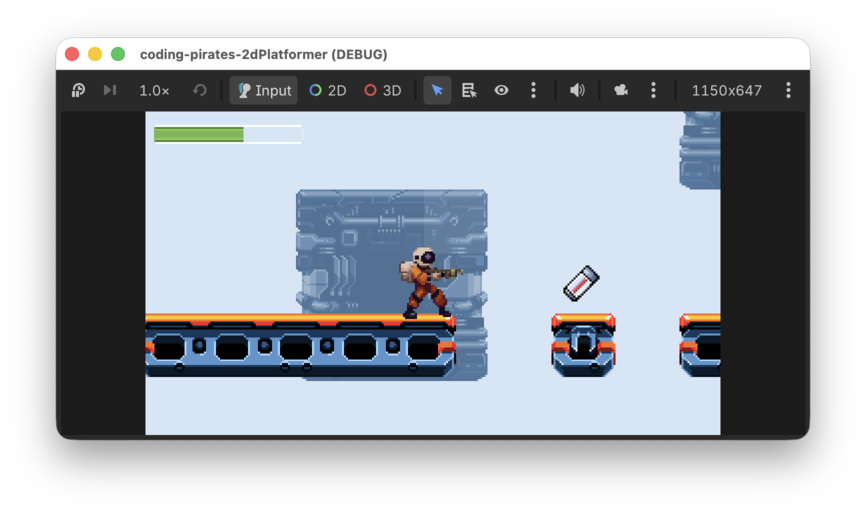
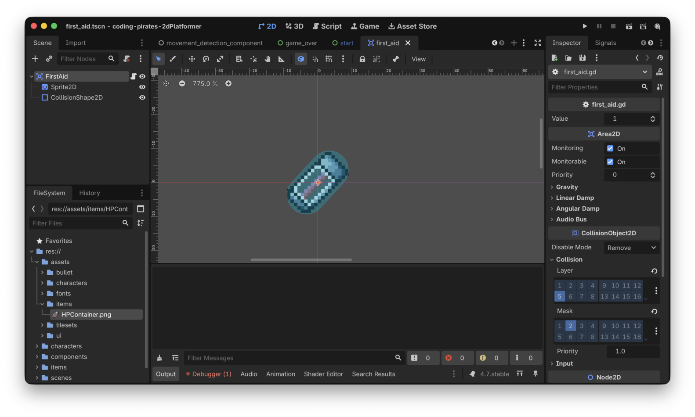
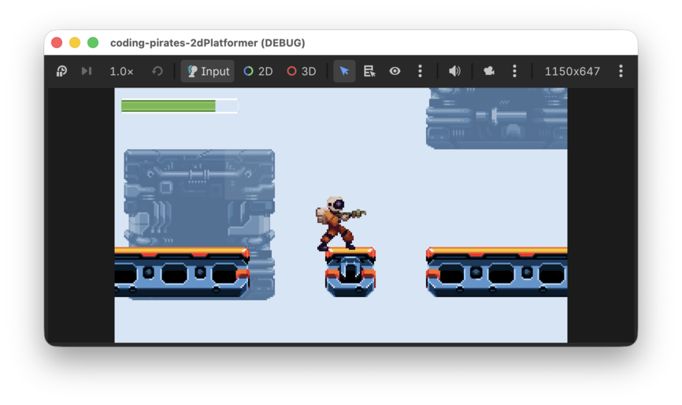

Godot 2D Platformer - bonus level 01, Extra health
I denne bonusepisode vil vi forsøge os med at lave en lille powerup/health/first aid ting som vores spiller kan samle op og få ekstra energi.

Lad os komme igang, you know the drill...say it with me...
Hvad er det vi gerne vil?
Vi vil gerne have lavet en "ting" som vores Player kan
gå ind i, og når det sker får den ekstra energi som kan være variabel.
Dog kan Player aldrig få mere end max_health,
så altså.
- Hvis vores
Playerharhealth = 3og samler ekstra health med værdien 1 op, bliverhealth = 4 - Hvis vores
Playerharhealth = 5og samler ekstra health med værdien 1 op, bliverhealth = 5for den var allerede =max_health
Nå, men det lyder jo ikke så slemt. En Area2D med en
CollisionShape2D og et script som connecter til
body_entered og så checker om det er noget i gruppen
"Player" vores "ting" er stødt sammen med, og hvis det er så laver vi en
funktion på Player som vi kan kalde og som tæller
Players HealthComponent op med den værdi som
vores "ting" nu har.
Lad os lave en liste og gå i gang.
Det skulle vel være det.
Ny FirstAid Scene
Du kan godt selv, den er simpel. Du kan bruge "HPContainer.png" som
du finder i assets mappen til din Sprite2D (ups, så fik vi
røbet at du skulle bruge sådan en).
Husk "collision_layer" og "collision_mask", du kan bruge "Items" til "collision_layer"
Her er vores forsøg:

Det var step 1
Videre.
Lav script
Du skal lave et script der:
- Definerer en værdi som vores
FirstAidtæller spillerens energi op med, kald din variabelvalueog lad den være af typenint - Connecter
body_enteredtil en funktion du laver, som skal tage parameter som vi kalderbodyaf typenNode2D - I din funktion skal du se om den
bodyder er stødt ind i voresFirstAider i gruppen "Player" (eller hvad du nu kaldte den gruppe du har tilføjet dinPlayertil i dens_readyfunktion). Hvis den er, så kald funktionenincrease_healthmedvaluesom parameter og bagefter skal du fjerne dinFirstAidscene fra spillet.
Prøv selv, du er en garvet Godot programmør nu så det kan du godt! :)
Her er vores forsøg:
extends Area2D
@export var value: int = 1
func _ready() -> void:
body_entered.connect(_on_body_entered)
func _on_body_entered(body: Node2D) -> void:
if body.is_in_group("Player"):
body.increase_health(value)
queue_free()Udvid Player
Og så skal vi lige have udvidet vores Player med
increase_health funktionen som vi så frækt antager findes
her ovenfor :)
Det skal bare være en simpel "gennemstillings funktion" som tager
værdien ind fra FirstAid og sender den videre ned til
Players HealthComponent hvor vi så også skal
have lavet en ny funktion som kan lave magien for os.
Det kunne se sådan her ud:
func increase_health(value: int) -> void:
health_component.increase(value)Igen sparker vi problemet ned af vejen og forholder os ikke til noget
som helst her, vi kalder bare videre til health_component
med den værdi vi har fået med ind.
Det var step 2
Og så kan vi ikke trække den længere, vi skal have udvidet
HealthComponent også og have lavet logikken.
Udvid HealthComponent
Ovenfor lovede vi jo at der nu ville være en funktion som vi kalder
increase på vores HealthComponent så lad os
starte med at skrive signaturen i HealthComponent:
func increase(value: int) -> void:Og hvad skal der så ske her? Ja altså, vi skal jo egentlig bare lægge
value til health...nemt hva!
Ja det var så også for nemt!
Der er jo lige den lille krølle at health +
value ikke må blive >
max_health.
Det kan vi skrive på forskellige måder. Vi kan være super detaljerede:
if health + value < max_value:
health += valueAltså...først checke om den nuværende værdi af health
plus value er mindre end max_value og hvis de
er, jamen så lav udregningen.
Det virker og det er til at forstå.
Men...vi er jo ikke nybegyndere længere så vi bruger selvfølgelig min
funktionen.
Som der står i dokumentationen:
Returns the minimum of the given numeric values
Så vi kan sige:
health = min(max_health, health + value)Og så vil Godot selv sørge for at health får den laveste
af de to værdier.
Lad os se et par eksempler for min (og dens bror
max) er gode at kende.
health= 3value= 1max_health= 5
health = min(5, 3 + 1) // 5 er større end 4 så health = 4
health= 3value= 3max_health= 5
health = min(5, 3 + 3) // 5 er mindre end 6 så health = 5
For en god ordens skyld er her hele den opdaterede
HealthComponent
class_name HealthComponent
extends Node
@export_category("Settings")
@export var max_health: int = 3
var health: int = max_health
func hit(damage: int) -> void:
health -= damage
func increase(value: int) -> void:
# Sæt health = det mindste tal af
# max_health
# og
# health + value
health = min(max_health, health + value)
func is_dead() -> bool:
return health <= 0Det var step 3
Tilføj en
FirstAid til din Level01
Nu kan du "Instantiate Child Scene" i "Items" containeren i din
Level01 og tilføje en FirstAid.
Kør så dit spil og prøv at se om du kan samle din
FirstAid op og få ekstra energi.

Aaaaah! Energi!
Det var det
Vi er nu fulde af energi og helt oppe at ringe over at vi nu kan samle ekstra energi op i vores spil
Du kan selv prøve at eksperimetere med at lave FirstAid
kasser med forskellig værdi hvis du har lyst.